输入框上方的「目录不是 git 仓库」提示：说清原因、点之前知道会 git init、能关掉
这条琥珀色提示在什么时候出现：工作区开了 Worktree isolation，但工作区的目录不是 git 仓库，runner 没法给会话单独建 worktree，只好让会话直接改这个目录。今天有三个问题：
①文案 Shared workDir — not isolated
看不出是「这个目录不是 git 仓库」；②按钮 Enable isolation
看不出会执行 git init（点开确认框才说，而且说得抽象）；③关不掉，这个工作区的每个会话都挂着它。
以下都是真实构建的 web 界面截图（方案代码 + 仓库 UI 测试数据，示例目录 /Users/alex/notes），不是手绘。深色主题，和你的截图一致。
①今天只说 shared / not isolated，没说哪个目录、为什么、有什么后果
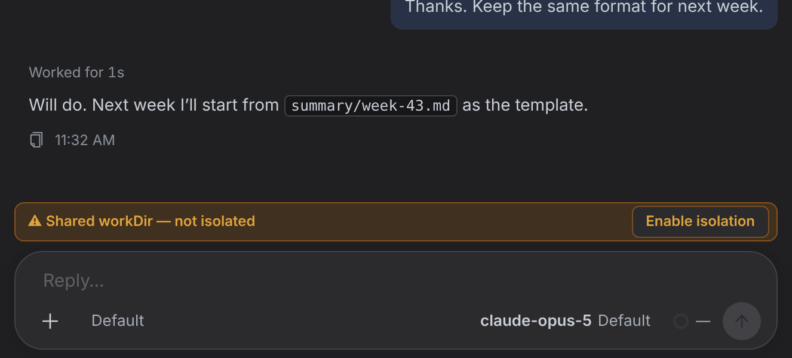
②建议两行：第一行说事实，第二行说后果；右边是修复办法和 ✕
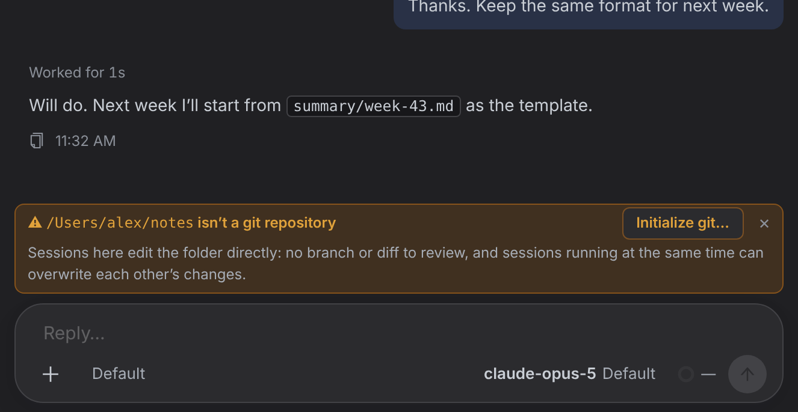
1 2 3 4- 1标题直接写出目录和事实：
/Users/alex/notes isn’t a git repository
。目录取自工作区设置；runner 每次心跳都会探测这个目录是不是 git 仓库，服务端已经存着结果，不用加接口。 - 2第二行写后果：会话直接改这个目录，没有分支和 diff 可以审，同时跑的会话会互相覆盖。
- 3按钮改成
Initialize git…
：名字就是它要做的事；省略号表示还会弹确认框（③）。 - 4✕：选「这个目录就不用 git 了」，关掉这个工作区的 Worktree isolation，以后的会话都不再出现（⑤⑥，含义见下方「待定 1」）。
③ 点 Initialize git… 后的确认框
今今天（点 Enable isolation）说了 git init，但只是「workspace’s working directory」「on its next run」，没有具体目录和步骤
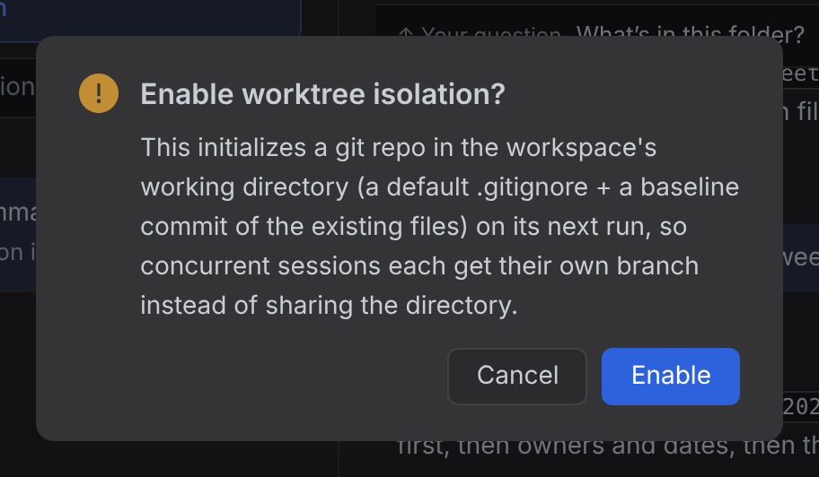
③建议标题
Initialize git in this folder?，按钮
Initialize git
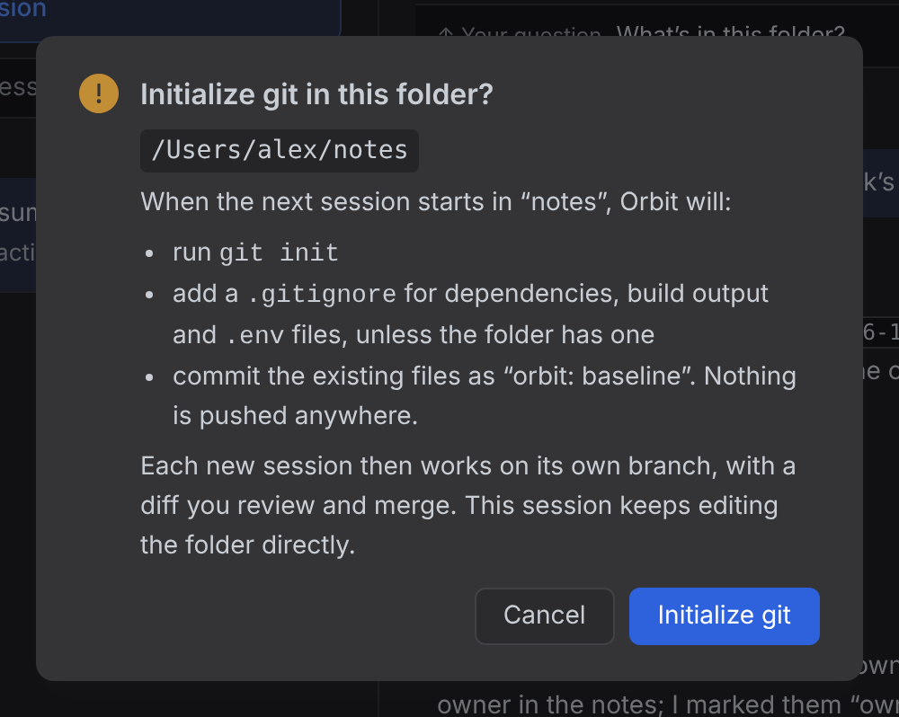
5 6 7 8- 5写出是哪个目录。
- 6逐条写 runner 会做什么（就是 runner 现在的
initGitRepo，不改）：git init；目录里没有.gitignore时加一个默认的（依赖、构建产物、.env）；把现有文件提交成orbit: baseline
。并说明只在本地，不推送到任何地方。 - 7说明之后的变化：新会话各自在自己的分支上工作，改动有 diff 可审、可合并；当前这个会话不受影响，继续直接改目录。
- 8按钮名和提示条上的按钮一致。
点了之后：确认 Initialize git，或点 ✕
④确认 Initialize git 之后右上角 toast
Git will be set up when the next session starts+ 目录；提示条消失（这个工作区已经选过了）
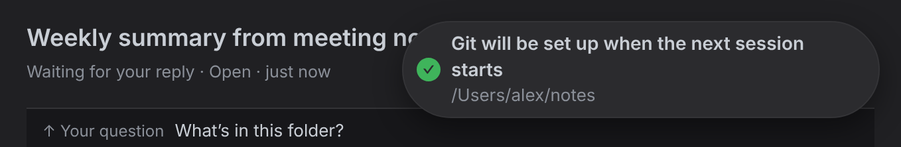
⋮

下一个会话启动时 runner 执行 git init，之后的会话都有自己的分支。
今天点完按钮，提示条原样还在，看不出点没点过。
今天点完按钮，提示条原样还在，看不出点没点过。
⑤鼠标悬停在 ✕ 上提示 ✕ 会做什么：
Keep it as a plain folder: turns off worktree isolation for this workspace
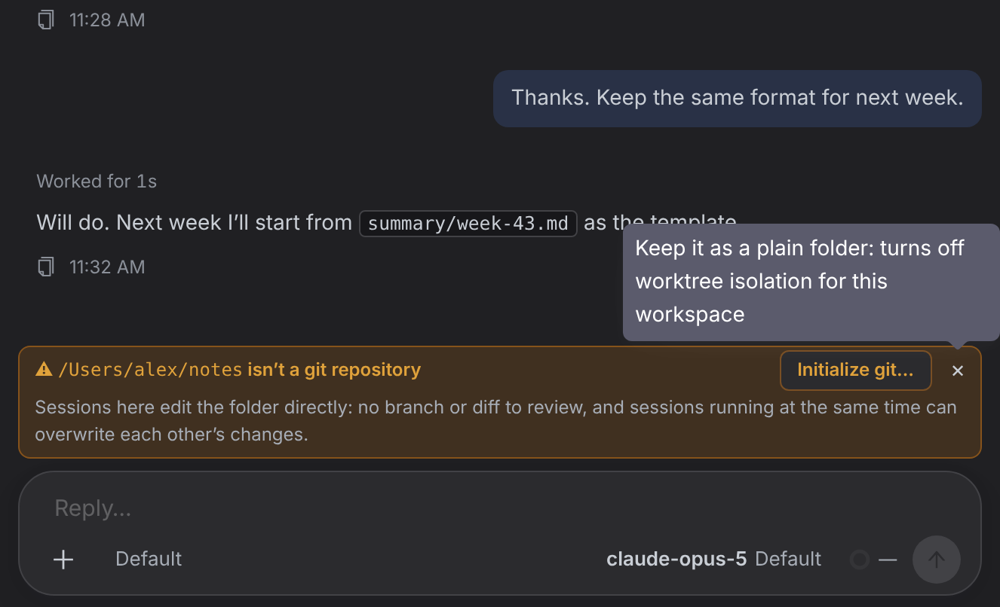
⑥点 ✕ 之后提示条消失；toast 说明关掉了什么，带
Undo
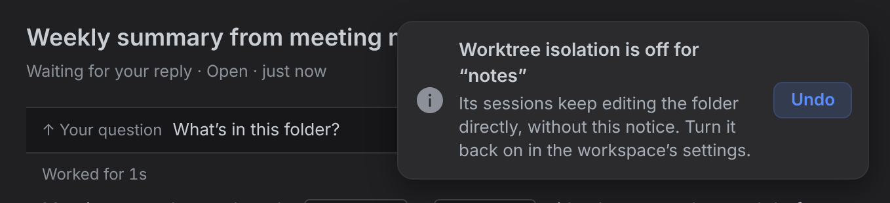
⋮
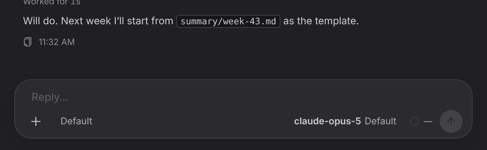
这个工作区以后的会话在所有设备上都不再出现。要恢复：Undo，或在工作区设置里重新打开 Worktree isolation。
会话本身的行为不变，本来就在直接改目录。
会话本身的行为不变，本来就在直接改目录。
少见情况 · 手机宽度 · 浅色主题
⑦目录是 git 仓库，但这个会话没拿到分支例如仓库还没有任何提交。这时 git init 没用，所以不显示 Initialize git…；✕ 只隐藏这个会话里的提示
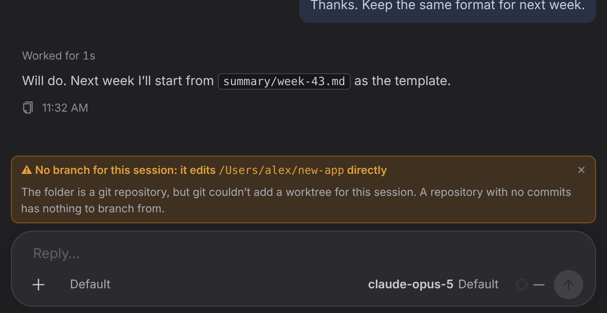
今天这种情况也显示同一条 Shared workDir，点 Enable isolation 也修不好：runner 只对「不是 git 仓库」的目录 init。
⑨浅色主题
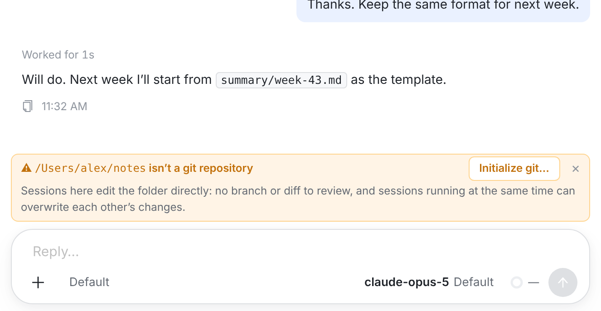
今手机 · 今天
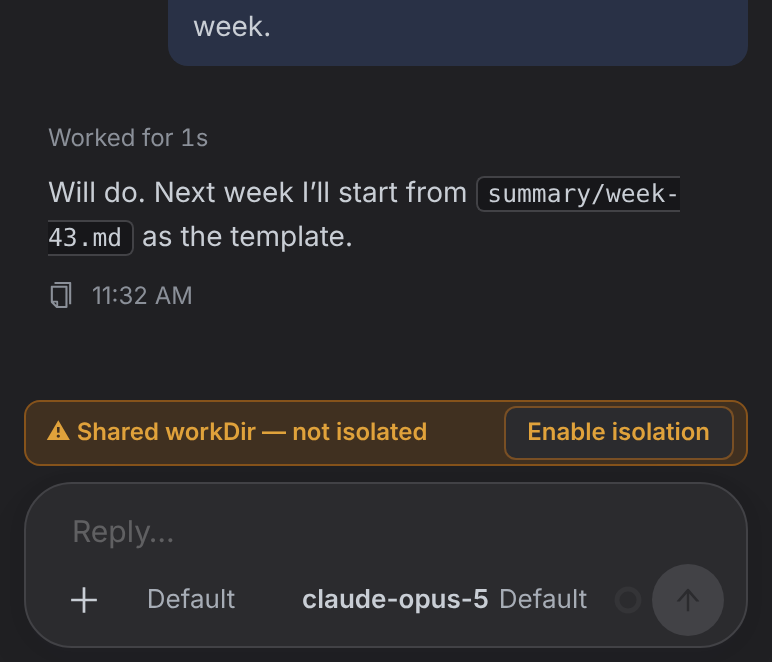
⑧手机 · 建议标题和说明自动换行，按钮和 ✕ 不挤掉
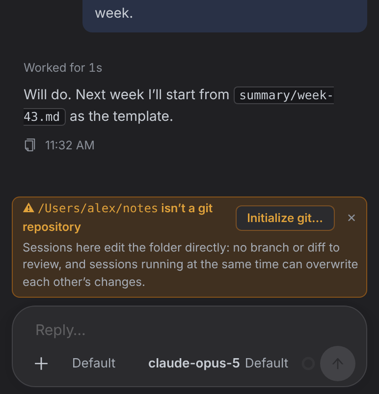
什么时候出现
| 工作区设置 / 目录 | 今天 | 建议 |
|---|---|---|
| Worktree isolation 关 | 不显示 | 不显示（不变） |
| Worktree isolation 开，目录是正常的 git 仓库 | 分支条 | 分支条（不变） |
| Worktree isolation 开，目录不是 git 仓库，还没选过 | Shared workDir — not isolated + Enable isolation | ② 写明目录和后果 + Initialize git… + ✕ |
| …点过 Initialize git… | 原样继续显示 | 不显示；下一个会话启动时 git init |
| …点过 ✕ | （没有 ✕） | 不显示（隔离已关，所有设备、所有会话） |
| 目录是 git 仓库，但这个会话没拿到分支（例如还没有提交） | 同一条 Shared workDir，点按钮也没用 | ⑦ 说明原因，不给 Initialize；✕ 只隐藏这个会话 |
待定 · 要你拍板
1. ✕ 的含义
方案 A推荐：✕ = 「这个目录不用 git」→ 关掉这个工作区的 Worktree isolation，toast 带 Undo（⑤⑥ 就是这个方案）。
- 不加新字段。这个工作区以后的会话在 web、macOS、iOS、Android 都不再出现。
- 设置页显示的就是真实状态（隔离 = 关）；会话行为不变，本来就在直接改目录。
- ✕ 顺带改了一个设置（悬停提示和 toast 都说明了，可以 Undo）。以后自己 git init 了，要回设置页把隔离打开。
方案 B：✕ 只隐藏，记在这台设备上（按工作区 + 目录）。
- 纯界面，不碰任何设置。
- 每台设备、每个客户端要各关一次；隔离仍开着，设置页继续警告「sessions will share it」。
不建议：只隐藏这个会话。新会话又会出现，「关不掉」等于没解决。
2. 原生客户端这次一起改吗
macOS / iOS 和 Android 今天显示同一句 ⚠ Shared workDir — not isolated
，连按钮都没有。
方案 A推荐：同一轮改三端：同样的两行文案、Initialize git…（同样内容的确认框）、✕。
方案 B：先上 web，原生端下一轮跟进。
落地（按代价排）
- Web：
SessionOutputs.tsx（提示组件、显示规则）、WorkspaceView.tsx（确认框、✕ 和 Undo）、api.ts、index.css，加单测。服务端和 runner 都不改：工作区列表已经带workDir/workDirIsGit/autoInitGit/enableWorktree。方案代码见prototype.patch。 - Android：
WorktreeBar.kt+WorktreeBarLogic.kt，加测试。 - macOS / iOS：
WorktreeBar.swift（提示 + 确认 sheet）+ OrbitKitWorktreeBarLogic，加测试。 - 以后再说：让 runner 上报具体原因（没有提交 / worktree 建不出来 / git init 失败），⑦ 的文案就能写得更准；git init 失败目前只记在 runner 日志里。